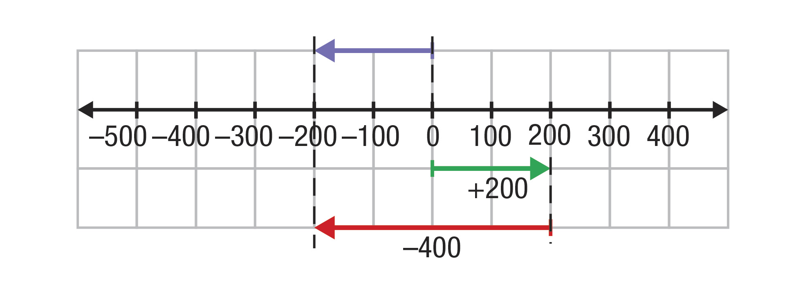

Trabalharemos, neste capítulo, com as ideias iniciais associadas aos números inteiros, apresentando exemplos relacionados ao cotidiano, como temperatura, saldo de gols, altitudes positivas e negativas, além da relação com fusos
horários.
A representação de pontos na reta numérica facilita a compreensão de conceitos como módulo, número oposto ou simétrico, comparação e ordenação de dois ou mais números inteiros, proporcionando, também, a ampliação do trabalho com o
plano cartesiano para os demais quadrantes. No 6º. ano, o sistema de coordenadas cartesianas e seu estudo ficaram restritos ao primeiro quadrante pelo fato de estarmos trabalhando no campo dos números naturais. Com a ampliação para o
campo dos números inteiros feita neste capítulo, podemos trabalhar nos demais quadrantes a representação de polígonos e as coordenadas de seus vértices, além da reflexão em relação ao eixo das abscissas e ao eixo das ordenadas.
Com base na representação, ampliação e redução de figuras feitas no plano cartesiano, apresentamos a congruência e a ideia de semelhança de polígonos usando a proporcionalidade, como dobro, triplo, metade, sem discutir razão de
semelhança, conceito que será trabalhado nos próximos volumes.
Sugestão de número de aulas: 20
Orientações didáticas
Atualmente, há outros modelos de geladeiras, nos quais o freezer está localizado abaixo ou ao lado do refrigerador. Freezer e congelador apresentam capacidades diferentes de refrigeração. As temperaturas mínimas atingidas variam de
acordo com o modelo e o fabricante. Aproveite para conversar com a turma sobre os cuidados que devemos ter em relação à armazenagem e ao prazo de validade dos alimentos.
Respostas
No freezer, a temperatura chega a –15 °C, no congelador, a –5 °C.
A indicação de armazenamento escrita na embalagem.
Há outras escalas termométricas, como a de Fahrenheit e a de Kelvin.
Na escala Fahrenheit, o intervalo entre os dois pontos fixos foi dividido em 180 partes iguais, e cada divisão corresponde a 1 grau Fahrenheit (1 °F). Nessa escala, o ponto de gelo é trinta e dois (32 °F) e o ponto
de vapor é o duzentos e doze (212 °F).
Já na escala Kelvin, o ponto de gelo é duzentos e setenta e três (273 K) e o ponto de vapor é trezentos e setenta e três (373 K). Nessa escala, o intervalo entre os dois pontos foi dividido em 100 partes iguais, e
cada divisão corresponde a 1 kelvin (1 K).
A equivalência entre essas unidades termométricas é dada por:
0 °C = 32 °F = 273 K
100 °C = 212 °F = 373 K

Na tabela apresentada, o termo “desligamentos” está associado ao número de pessoas que foram demitidas ou então que pediram demissão.
No preenchimento da tabela, os alunos devem calcular a diferença entre o número de admissões e o número de desligamentos. No item b, o total de admissões é menor que o total de desligamentos, por isso o saldo
obtido é negativo.
2 150 – 2 479 = –329
Se os alunos apresentarem dificuldade em entender isso, peça a eles que façam o mesmo cálculo usando a calculadora.
Troque ideias com seus alunos a respeito do significado de um número negativo, em especial, na economia de uma cidade, estado ou país: na mudança de perfil econômico, nas relações de trabalho e de que forma isso impacta no dia a
dia de cada pessoa.
Admissões
Desligamentos
Saldo
Janeiro
2 438
1 756
682
Fevereiro
2 096
1 587
509
Março
2 150
2 479
–329
Respostas
a) Analise como foi determinado o saldo do mês de janeiro, ou seja, faça a diferença entre o número de admissões e o de desligamentos. Assim: 2 096 – 1 587 = 509.
b) 2 150 – 2 479 = –329.
Atividades
a) Há 12 pavimentos.
b) Apenas 1.
c) Seriam representados com os números inteiros –1, –2 e –3.
a) A partir de 70 °C.
b) De 5 °C a 60 °C.
c) Sim.
d) Sim, pois todo número natural é também inteiro.
e) As bactérias ficam inativas.
a) Significa que ela está a 1 400 m acima do nível do mar.
b) +2 134 m.
c)
+321
–18
+27
Chame a atenção dos alunos para a legenda na parte inferior da tabela. Questione-os sobre cada sigla. Se necessário, use como exemplo algumas rodadas do campeonato estadual correspondente ao estado onde se localiza a escola.
Classificação
P
J
V
E
D
GP
GC
SG
1 Real Madrid
40
16
12
4
0
45
14
31
2 Sevilla
36
17
11
3
3
36
21
15
3 Barcelona
35
17
10
5
2
42
17
25
4 Atlético de Madrid
31
17
9
4
4
31
14
17
5 Villarreal
30
17
8
6
3
26
12
14
6 Real Sociedad
29
17
9
2
6
28
25
3
7 Athletic Bilbao
27
17
8
3
6
22
19
3
8 Las Palmas
24
17
6
6
5
27
24
3
9 Celta
24
17
7
3
7
28
32
-4
10 Eibar
23
17
6
5
6
22
22
0
a) Determinando a diferença entre o número de gols pró (GP) e gols contra (GC), assim: 45 – 14 = 31.
b) O saldo é de 25 gols, pois 42 – 17 = 25.
c) O time marcou 31 gols, pois 17 + 14 = 31.
d) O Real Sociedad sofreu 25 gols, pois 28 – 3 = 25.
e) Cada vitória vale 3 pontos; e cada empate, 1 ponto. Multiplica-se por 3 o número de vitórias e somam-se os pontos correspondentes ao número de empates.
f) É de 27 pontos. 3 ∙ 8 + 3 = 24 + 3 = 27.
g) É de –4 gols.
h) É zero.
i) Quando o time apresenta saldo negativo significa que ele sofreu mais gols do que marcou.
j) O time tem saldo zero quando sofre e marca a mesma quantidade de gols.
k) Pessoal.
Verifique se os alunos têm dificuldades na leitura das horas em relógios analógicos. Caso apresentem dúvida, proponha mais atividades no caderno, fazendo-os desenhar relógios representando diversos horários.
a) Verifique se os alunos têm dificuldades na leitura das horas em relógios analógicos. Caso apresentem dúvida, proponha mais atividades no caderno, fazendo-os desenhar relógios
representando diversos horários.
b) 19 h 3 min 0 h 3 min 8 h 3 min
c) São um conjunto de faixas imaginárias que dividem a Terra, indicando o horário local das cidades em relação ao Meridiano de Greenwich. As faixas são representadas no planisfério em
forma
de arcos; cada uma mede 15° e corresponde a uma hora.
d) É de 5 horas.
e) É de 8 horas.
f)
1 hora a menos
4 horas a mais
12 horas a mais
Matemática em detalhes
Analisando a indicação dos fusos horários no mapa, oriente os alunos a considerar que as cidades localizadas à direita do Meridiano de Greenwich estão com o horário à frente das cidades que estão localizadas à esquerda dele.
Comente com eles que há sites que nos apresentam o horário em tempo real de várias cidades. No entanto, a turma deve ficar atenta aos horários de verão utilizados por alguns países do mundo, além do Brasil. Por essa razão,
dependendo da época do ano em que os alunos estiverem pesquisando, pode haver divergências dos horários apresentados no livro, os quais foram considerados sem o horário de verão. Um exemplo disso é a cidade de Montreal, no Canadá.
Respostas
a) Os números positivos e negativos se referem às horas a mais e a menos em relação ao horário de Brasília. O número zero significa que a cidade tem o mesmo horário de Brasília.
b) Em Barcelona, serão 13 horas.
c) Em Brasília, também serão 15 horas. Isso acontece porque as duas cidades estão localizadas no mesmo fuso horário.
d) Em Montreal, serão 8 horas.
e) Em Brasília, serão 22 horas.
f) Serão 11 horas, pois 4 + 2 = 6 e 6 + 5 = 11.
Sugestão de atividades: questões 1 e 2 da seção Hora de estudo.
Respostas
a) O 3.º trimestre, que engloba os meses de junho, julho e agosto.
b) Nos meses de janeiro e fevereiro.
c) Pessoal.
Proponha outras representações de retas numéricas com intervalos de 5 em 5 unidades, 10 em 10 unidades, entre outros.
Esse assunto será aprofundado na abordagem dos números racionais. Neste momento, basta sugerir aos alunos que existem outros números entre cada um dos números inteiros, que serão estudados futuramente. Por exemplo, uma temperatura
de –2,5 °C, para representá-la na reta, indicamos um ponto entre –2 e –3, exatamente na metade.
a) O ponto E e está no sentido positivo da reta.
b) É antecessor de zero.
c) O ponto G.
d) São os números +7 e +8.
Atividades
Ponto
B
E
K
C
D
A
Número inteiro
–6
+5
+3
–2
+2
–5
Oriente os alunos a observar, primeiramente, o intervalo utilizado em cada item e a localizar o zero para, então, identificar o número inteiro representado pelos pontos.
a)
Ponto
K
A
P
Número inteiro
+2
-8
-6
b)
Ponto
Z
P
K
Número inteiro
0
-25
+20
c)
Ponto
P
M
S
Número inteiro
-20
+20
+80
d)
Ponto
B
P
S
Número inteiro
-24
-60
-96
a) Cada distância representa 2 unidades.
b) Cada distância representa 5 unidades.
c) Cada distância representa 20 unidades.
d) Cada distância representa 12 unidades.
Ao representarmos números inteiros na reta numérica, na qual cada distância corresponde a uma unidade, o antecessor de um número é aquele que vem imediatamente à esquerda e o sucessor é aquele que vem imediatamente à direita.
a) F (O antecessor de –3 é –4)
b) V
c) F (Os números 2, 3 e 4 são consecutivos)
d) V
e) V
f) F (Zero é o sucessor de –1. Também podemos dizer que o antecessor de –1 é –2)
g) V
a) O número 5.
b) O número 40.
c) O númeor 90.
c
Sugestão de atividades: questões 5, 10 e 14 da seção Hora de estudo.
Respostas
a) A distância é de 150 m.
b) Ele percorreu 500 m. 100 + 100 + 150 + 150 = 500.
c) Fica a 400 m. 150 + 250 = 400.
Atividades
a) 8
b) 10
c) 1
d) 42
e) 970
f) 25
a) Terá que se deslocar 500 m, pois 250 + 250 = 500.
b) Laura se deslocou 400 m. 50 + 50 + 50 + 250 = 400.
Para facilitar a identificação das distâncias percorridas, sugira aos alunos que desenhem o trajeto feito por Laura.
Há várias formas, uma delas seria Sílvia andar 100 m, pegar Laura e, juntas, andarem 200 m até o prédio de Marcos.
a) 4
b) 6
c) 8
d) 7
e) 0
f) 5
a) Há 17 unidades.
b) Há 18 unidades.
c) Há 6 unidades.
d) Há 1 unidade.
e) Há 23 unidades.
f) Há 100 unidades.
Oriente os alunos a imaginar os pontos em uma reta numérica.
Explique aos alunos que, quando solicitamos os números inteiros que estão entre dois números dados, esses – que são os extremos do intervalo – não fazem parte dos números que queremos. No item
a, queremos os números inteiros que estão entre –2 e 2. Observando na reta numérica, fica fácil perceber que são os números –1, 0 e 1.
Se, mesmo assim, os alunos ficarem em dúvida, organize alguns deles lado a lado e pergunte quais estão entre os dois alunos indicados.
c) O ponto D, porque está à mesma distância da origem.
d) O ponto E.
e) Os pontos A e B ficariam sobrepostos.
f) Sim, o número zero. O ponto O serve de referência e está exatamente sobre o eixo de simetria. Além disso, o módulo de zero é igual a zero e não existe outro número com o mesmo módulo.
Atividades
a) O oposto de +1.
b) O oposto de –3.
c) O oposto de +16.
d) O oposto do oposto de +14.
a) –17
b) +26
c) –50
d) –4
e) – {–9} = 9
f) – {+36} = –36
a) Os números –3, –2, –1, 0, 1, 2 e 3.
b) Os números maiores do que 5 e menores do que –5.
d) |–2| = 2, o oposto de 2 é –2.
a) F (Zero não tem simétrico)
b) V
c) F (O simétrico de +53 é –53 e seu oposto é +5
d) V
e) F (O sucessor de –500 é –499 e o antecessor é –501)
f) V
Sugestão de atividades: questões 4, 8 e 12 da seção Hora de estudo.
Respostas
a) É de 23 °C, na Cidade do México.
b) É de –7 °C, em Moscou.
c) É de –1 °C, em Seul.
d) É de 23 °C, na Cidade do México.
A Groenlândia está localizada no continente americano, mas pertence à Dinamarca, localizada na Europa.
a) A maior temperatura é a que está mais afastada do zero, ou seja, mais à direita na reta numérica.
19 > 13 ou 23 > 5 ou 10 > 9, entre outros.
b) A mais alta é a que está mais próxima do zero.
–7 < –4 ou –7 < –1 ou –4 < –1.
c) Todas as temperaturas positivas são maiores do que zero.
19 > 0 ou 23 > 0 ou 10 > 0, entre outros.
d) Os números inteiros negativos representam temperaturas abaixo de zero.
–4 < 0 ou –7 < 0 ou –1 < 0.
Atividades
a) +5 < +10
b) 28 > +14
c) –36 < 13
d) +54 > –67
e) –27 < –9
f) 0 > –71
g) 48 > 0
h) +8 = 8
c, e
a) –8 < –3 < 0 < 9
b) –50 < –16 < 12 < 29
c) –57 < –1 < 3 < 100
d) –38 < –10 < –7 < 8
a) –1
b) um
c) zero
d) menor / maior
a) No azul: –13 °C e 8 °F. No vermelho: 38 °C e 100 °F.
b) No azul: –6 °C. No vermelho: 45 °C. No azul: –15 °C. No vermelho: 36 °C.
c) Pessoal.
Sugestão de atividades: questões 3, 6, 7, 9 e 11 da seção Hora de estudo.
Respostas
C (–2, 2), D (–4, –4), E (0, –4), F (1, –2), G (5, –3) e H (6, 0).
a) No 3 .º quadrante.
b) Os pontos F e G.
c) Os pontos E e H.
A nova figura deverá ficar espelhada em relação ao eixo y.
A nova figura deverá ficar espelhada em relação ao eixo x.
Respostas
c) Sim.
d) Sim.
f)
Triângulo
Vértices do triângulo
ABC
A (3, 4)
B (3, 1)
C (1, 1)
DEF
D (–3, 4)
E (–3, 1)
F (–1, 1)
GHI
G (3, –4)
H (3, –1)
I (1, –1)
JKL
J (–3, –4)
K (–3, –1)
L (–1, –1)
g) V, V, F, V, V.
Atividades
Durante o jogo, circule pela sala e verifique se as coordenadas estão sendo aplicadas corretamente de acordo com os eixos traçados pelo jogador. Observe como os alunos anotam os pontos perdidos e calculam o total de pontos. Procure
não interferir, pois, no próximo capítulo, trabalharemos com as operações de adição e subtração de números inteiros.
a) (–1, –3)
b) O polvo.
c) O navio de pirata.
d) (2, –4); (2, –2); (3, –3); (2, –3) e (1, –3).
c) Sim.
a) A’ (–3, 1), B’ (–1, 3), C’ (–5, 2).
b) Pessoal.
Incentive os alunos a observar as coordenadas e escrever afirmações usando seus conhecimentos sobre pontos simétricos, módulo e simetria. Por exemplo: as abscissas dos vértices do triângulo ABC são simétricas às abscissas dos
vértices de A’B’C’.
Pessoal.
Se A e C são vértices não consecutivos de um quadrado, significa que eles são pontos extremos de uma mesma diagonal, que passa pela origem. Portanto, os demais vértices serão simétricos dos pontos dados, em relação aos eixos das
abscissas e das ordenadas. Suas coordenadas são: B (2, 2) e D (–2, –2).
Propomos, primeiramente, o reconhecimento de figuras semelhantes desenhadas em um plano cartesiano para, depois, solicitar a construção de figuras congruentes e semelhantes. Lembrando que, neste momento, trabalhamos somente com a
ideia de semelhança. Também retomamos as figuras simétricas, porém, em todos os quadrantes.
Respostas
a) Retângulo.
b) A (1, 1), B (3, 1), C (3, 2) e D (1, 2).
c) E (3, 3), F (9, 3), G (9, 6) e H (3, 6).
d) Foram multiplicadas por 3.
e) Foram triplicadas.
f) Permaneceram iguais, todos com 90°.
Respostas
a) Todas.
b)
Na figura B, todos os lados têm a metade da medida dos lados da original.
Na figura C, todos os lados têm a mesma medida dos lados da original.
Na figura D, todos os lados têm uma unidade a mais do que a medida dos lados da original.
c).
Os ângulos continuaram com a mesma medida.
Os ângulos continuaram com a mesma medida.
Os ângulos continuaram com a mesma medida.
Atividades
a) Foram reduzidas à metade.
b) Sim.
c) Não são congruentes, pois, apesar de terem a mesma forma, não têm os lados correspondentes congruentes. As duas figuras são semelhantes, pois apresentam os lados correspondentes
proporcionais e os ângulos correspondentes com a mesma medida.
Forma.
Medida dos ângulos correspondentes.
a) Mariana construiu um quadrado de vértices: A (2, 1), B (5, 1), C (5, 4), D (2, 4).
b) A’ (4, 2), B’ (10, 2), C’ (10, 8), D’ (4, 8).
c) Não, apesar de a forma ser a mesma e os ângulos permanecerem congruentes, a medida dos lados dobrou. Podemos dizer que são semelhantes, pois têm a mesma forma e os ângulos são
congruentes.
a) A (2, 2), B (4, 4) e C (6, 2).
b) (1, 1), (2, 2) e (3, 1).
c) (4, 4), (8, 8) e (12, 4).
d) Sim, pois têm a mesma forma e os ângulos são congruentes.
Sugestão de atividade: questão 13 da seção Hora de estudo.
Organize as ideias
Situações nas quais usamos os números inteiros
Temperaturas; altitudes e profundidades; acima e abaixo do solo; saldo de gols; fuso horário; representações no plano cartesiano; entre outras.
Como é formado o conjunto dos números inteiros
Pelos números inteiros positivos, os inteiros negativos e o zero. ℤ = {..., –3, –2, –1, 0, 1, 2, 3, ...}
Representação dos números inteiros na reta numérica
Os números inteiros positivos ficam à direita do zero (origem) e os números inteiros negativos ficam à esquerda do zero.
Módulo ou valor absoluto de um número inteiro
É a distância entre o ponto associado a esse número na reta numérica e a origem (zero). Representa-se por: |–7| = 7 e |+5| = 5.
Oposto ou simétrico de um número inteiro
Dois números que estão à mesma distância da origem na reta numérica, ou seja, que têm o mesmo módulo. Indica-se por –( ), assim: –(+9) = –9 e –(–3) = 3.
Comparação de números inteiros
Uma estratégia é pensar na localização na reta numérica, pois será maior o número que estiver mais à direita. 10 > 5, 5 > 0, 0 > –1, –3 > –40.
Plano cartesiano
O plano cartesiano é um referencial que usa dois eixos perpendiculares entre si, formando quatro quadrantes. Os pontos são localizados por um par ordenado, no qual primeiro indicamos a abscissa e, depois, a ordenada.
Polígonos congruentes
Polígonos congruentes são aqueles que apresentam a mesma forma, os lados correspondentes têm a mesma medida e os ângulos correspondentes têm a mesma medida.
Polígonos semelhantes
Polígonos semelhantes são aqueles que apresentam a mesma forma, os lados correspondentes proporcionais e os ângulos correspondentes têm a mesma medida.